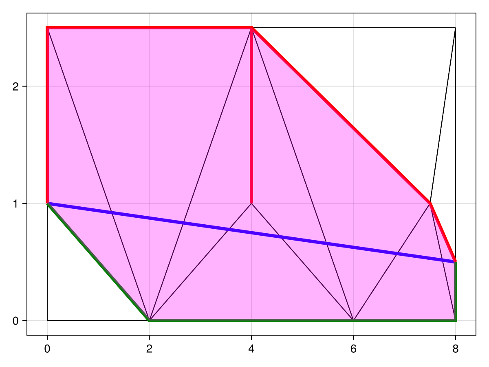

Constrained Delaunay Triangulations
Now we introduce constrained Delaunay triangulations. Constrained Delaunay triangulations are similar to Delaunay triangulations $\mathcal D\mathcal T(\mathcal P)$, except with the additional requirement that a provided set of segments $\mathcal S$ are constrained to be part of the triangulation, giving a triangulation denoted $\mathcal D\mathcal T(\mathcal P, \mathcal S)$.
An important concept for defining constrained Delaunay triangulations is that of visibility. We say that two points $p$ and $q$ are visible to each other if the open line segment $pq$ does not intersect any other segment in $\mathcal D\mathcal T(\mathcal P, \mathcal S)$. We see that a triangle $T \in \mathcal D\mathcal T(\mathcal P, \mathcal S)$ is constrained Delaunay if its open circumcircle contains no point in $\mathcal P$ that is visible from any point inside $T$. Using this definition, we can thus define the constrained Delaunay triangulation of $\mathcal P$ with respect to $\mathcal S$ as the triangulation in which every triangle is constrained Delaunay. There is a corresponding constrained Delaunay lemma just as for unconstrained Delaunay triangulations, but we do not list it here.
Incremental Insertion Algorithm
The algorithm for constructing constrained Delaunay triangulations is incremental and reasonably simply to describe. To compute $\mathcal D\mathcal T(\mathcal P, \mathcal S)$, we:
- Compute $\mathcal D\mathcal T(\mathcal P)$, the unconstrained Delaunay triangulation.
- Insert each segment $s \in \mathcal S$ into $\mathcal D\mathcal T(\mathcal P)$ one by one.
Of course, this second step is where all the complication lies. Most of the discussion in this section will be about the problem of inserting segments into a triangulation.
Inserting a Segment into a Triangulation
Let's now discuss how we can add a segment into a triangulation. To understand the algorithm, let's first look at an example. Consider the figure below.
To develop an algorithm, we need to notice one important thing from this figure: Since the blue segment will occlude visibility between any points on either side of the segment, the blue segment effectively divides, locally, the triangulation into two parts that no longer interact with each other. In the figure above, this means that any changes to the triangles bounded between the red curve and the blue segment will not interact those in the region bounded between the green curve and the bkue segment. This is a key observation that will allow us to develop an algorithm for inserting segments: we can handle the two sides separately.
We need to also understand what we are showing in this figure. The highlighted triangles show all triangles intersected by the blue segment. The red boundary shows the chain of vertices intersected by the blue segment above the segment. There is a clear problem with this boundary though: there is a dangling edge, caused by the segment intersecting through two triangles that share an edge, except they are not hit right after each other. The main problem with this is that the object defined by the union of the blue segment and the red boundary is not technically a polygon. We treat it as if it were a polygon, though, by imagining an ant walking around the boundary of this object and splitting the dangling vertex into two copies of itself, so that the ant walking around the boundary essentially sees two different vertices. (It is possible for a vertex to be repeated three or more times, but this is much more rare.) The green boundary is defined similarly.
What can we do now with this information? We have now established that the blue segment defines two polygonal cavities $\mathcal C_1$ and $\mathcal C_2$ that are adjacent to each other, sharing only the blue segment, and any changes to the triangulation within $\mathcal C_1$ and $\mathcal C_2$ will have no affect on the other cavity. We thus devise the following algorithm:
- Given a segment $e_{ij}$ to be inserted, find the triangles intersected by the segment.
- Delete all triangles intersected by the segment from the triangulation and add $e_{ij}$.
- Identify the two polygonal cavities $\mathcal C_1$ and $\mathcal C_2$ on each side of $e_{ij}$, taking care for any danling edges by repeating the vertices as needed.
- Retriangulate $\mathcal C_1$ and $\mathcal C_2$ separately.
- Add the triangles from the triangulated polygonal cavities into the original triangulation.
Once step five is complete, the triangulation has now successfully added $e_{ij}$ into the constrained triangulation. We are of course skipping over some key facts, like demonstrating why there are no other changes to the triangulation away from $\mathcal C_1$ and $\mathcal C_2$; for these details, see the original paper by Shewchuk and Brown (2015).
To actually implement this algorithm, there are some key details that need to be worked out:
- How can we find all triangles intersected by $e_{ij}$?
- How can we identify the polygonal cavities $\mathcal C_1$ and $\mathcal C_2$?
- How can we efficiently retriangulate $\mathcal C_1$ and $\mathcal C_2$?
Let's address these one at a time.
Finding Triangles Intersected by a Segment
The problem is: Given a segment $e_{ij}$, find the set of all triangles intersected by the segment. This is exactly the problem that is solved by our point location algorithm - remember that our algorithm marches along all triangles from $p_i$ to $p_j$ until it finds the triangle containing $p_j$. Thus, by keeping track of all triangles visited during a point location algorithm jumping from $p_i$ to $p_j$, we can find all the triangles intersected by the segment.
Finding the Polygonal Cavities
Now we need to consider the problem of finding the two polygonal cavities $\mathcal C_1$ and $\mathcal C_2$. These can also be found by the point location algorithm. In addition to keeping track of all triangles visited, whenever an edge $e_{k\ell}$ is stepped over we keep track of the vertices $k$ and $\ell$ and put them into the list of vertices for either $\mathcal C_1$ and $\mathcal C_2$, depending on which side of the segment $e_{ij}$ they are on. There are some important details here to consider for e.g. collinear edges, but we do not address this here.
Efficiency Triangulating the Polygonal Cavities
Now we must address the problem of retriangulating the polygonal cavities. This issue is the same for both $\mathcal C_1$ and $\mathcal C_2$, so we discuss this problem in general for a given polygonal cavity $\mathcal C$ which could be either $\mathcal C_1$ or $\mathcal C_2$. While we could just simply triangulate $\mathcal C$ using a Bowyer-Watson algorithm, there is a better approach. It turns out that Chew's algorithm for triangulating convex polygons, as described in the convex triangulation section, also works for the polygonal cavity $\mathcal C$. This is what we use for triangulating $\mathcal C$.
Putting Everything Together
Now understanding all these details, the algorithm for inserting a segment into a triangulation follows the same procedure as outlined above. We first find all triangles intersected by the segment, then find the polygonal cavities $\mathcal C_1$ and $\mathcal C_2$, and then retriangulate these polygonal cavities using Chew's algorithm. Once this is done, we have successfully inserted the segment into the triangulation.
Boundaries
One other important part of a constrained Delaunay triangulation is the enforcement of boundaries and holes in a triangulation. This part of the algorithm comes after all segments have been computed. The problem is as follows: Given a set of boundaries defined by segments, delete all triangles that fall outside of the boundaries. The approach we take for this follows the description given by Shewchuk in his Triangle paper:
- First, we find all points that will be deleted. To do this, we go across each boundary edge (from the user-provided boundary, not necessarily of the triangulation) and identify the triangle adjacent to the edge away from the interior. The vertex of this triangle away from the boundary is used to find further points, checking all neighbours of this vertex and so on, deleting all vertices that are not in the boundary.
- Using the set of points identified for deletion, we then identify all triangles to delete. This is done by looking all triangles that have a vertex in the set of points to delete, using the
Adjacent2Vertexmap to do so. We also need to assess the boundary edges once again. Safety is important here since, for example, a triangle might be comprised of vertices that all lie on the boundary but the triangle's interior is outside of the boundary. So, we check each triangle and ensure that those we've identified for deletion have a centroid that appear outside of the boundary. If this is not the case, we remove it from the set of triangles marked for deletion. - Now having all the triangles to delete, we delete them all from the triangulation.
With these steps complete, we will have our complete triangulation. To make these steps clear, the figure below shows an example.
Adding Points into a Constrained Delaunay Triangulation
Adding points into a constrained Delaunay triangulation is similar to the unconstrained case. The Bowyer-Watson algorithm is again used, except that, when we are excavating the cavity for the new point, we avoid stepping across any segments. If a point is inserted onto a segment, we dig cavities separately on each side of the segment.